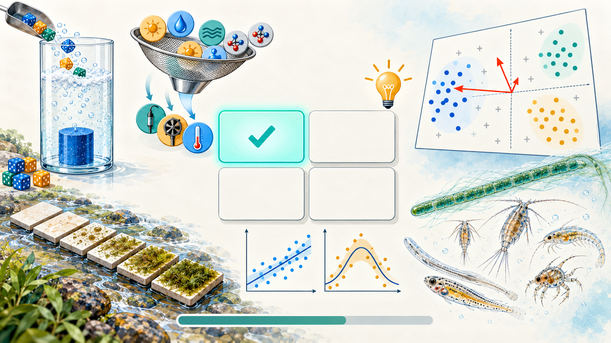

Cuestionario 1 · RDA y CCA
Bioestadística y Diseño Experimental · Semana 4 · 2026-II
Instrucciones
Este cuestionario acompaña el Taller 9 · Ordenación restringida: RDA y CCA de la Semana 4. Son 12 preguntas de opción múltiple basadas en las Partes 1 a 5 del taller y en el estudio de caso: la RDA como regresiones seguidas de un PCA, el paso del análisis indirecto al directo, el R² ajustado, la prueba global por permutaciones, el VIF, ordistep() frente a ordiR2step(), los aportes condicionales, los ejes que se sostienen, los escalamientos del triplot, la RDA parcial con la visita, la comparación RDA frente a CCA y el nivel de la permutación en la RDA del mesozooplancton.
Cada pregunta tiene una pista opcional y, al responder, una explicación breve; se recomienda usarlas para repasar, no solo para obtener una calificación. El orden de las opciones cambia en cada intento. Es una práctica sin nota; la misma práctica está en Moodle (Cuestionario1_T9) y sirve de repaso antes de elegir y justificar la ordenación restringida del documento final del estudio de caso (rúbrica R5).
Pregunta 1 de 12
Referencias
Las preguntas de este cuestionario son de elaboración propia para este curso, a partir de las bases de datos del Taller 9 (Osorio Ávila et al., 2015, y Vargas-Ospina et al., 2025); no reproducen ejercicios ni datos de las fuentes citadas en el taller.